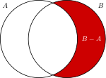

Basic operations: Union, intersection, and complement of sets
- sets (basic notation)
Sets can be combined with each other in various ways. Sometimes this is used as a different way of defining sets, and sometimes it is an actual construction process where multiple sets serve as the input to some mechanism that returns a single set as the output. You’ll see many examples of both usages throughout the course. Before we discuss these operations, though, we have to introduce one special set that will help us illustrate how these operations work.
The empty set
As mentioned before, you can think of sets as a kind of strange container without internal order and without duplicates. Since containers can be empty, it isn’t too surprising that there is something called the empty set. The empty set is written \(\left \{ \right \}\), or more commonly \(\emptyset\).
The empty set contains nothing. There is no \(a\) such that \(a \in \emptyset\). At the same time, the empty set is not simply nothing because it is still a set. A set is not nothing, just like an empty container is not nothing.
The empty set may seem rather useless to you, but it actually has a very important role to play. Just like the introduction of \(0\) was a tremendous breakthrough that made arithmetic a lot more elegant and internally consistent, operations on sets would not be as well-behaved without the empty set. You will see some examples of that right away.
For each one of the statements below, say whether it is true or false.
- \(\emptyset = \left \{ \right \}\)
- \(\emptyset = \left \{ \emptyset \right \}\)
- \(\emptyset \in \left \{ a \right \}\)
- \(\left \{ a,b \right \} \neq \emptyset\)
Union
Given two sets \(A\) and \(B\), their union \(A \cup B\) is the set that contains
- all elements of \(A\), and
- all elements of \(B\), and
- nothing else.
This means that the union of two sets is the result of taking everything that belongs to at least one set. Union builds bigger sets from smaller sets. This makes it something like the set counterpart of addition over numbers.
Given two sets \(A\) and \(B\), \(x\) is a member of the union \(A \cup B\) iff \(x\) is a member of at least one of \(A\) and \(B\).
The union of \(\left \{ 1 \right \}\) and \(\left \{ 2,3,4 \right \}\) is \(\left \{ 1,2,3,4 \right \}\). The union of \(\left \{ 1,2 \right \}\) and \(\left \{ 3,4 \right \}\) is also \(\left \{ 1,2,3,4 \right \}\). And the union of \(\left \{ 1,2 \right \}\) and \(\left \{ 1,2,3,4 \right \}\) is just \(\left \{ 1,2,3,4 \right \}\) itself.
Compute the union of the following:
- \(\left \{ 0,1 \right \} \cup \left \{ 2,3 \right \}\)
- \(\left \{ 0,1 \right \} \cup \left \{ 1,2,3 \right \}\)
- \(\left \{ 0,1 \right \} \cup \left \{ 0,1 \right \}\)
- \(\left \{ 0,1 \right \} \cup \emptyset\)
- \(\left \{ 1,2,3 \right \} \cup \left \{ 0,1 \right \}\)
Compute the union of the following:
- \(\left \{ 0,\left \{ 1 \right \} \right \} \cup \left \{ 2,3 \right \}\)
- \(\left \{ 0,\left \{ 1 \right \} \right \} \cup \left \{ 1,2,3 \right \}\)
- \(\left \{ 0,\left \{ 1 \right \} \right \} \cup \left \{ 0,1 \right \}\)
- \(\left \{ 0,\left \{ 1 \right \} \right \} \cup \emptyset\)
- \(\left \{ 1,2,3 \right \} \cup \left \{ 0,\left \{ 1 \right \} \right \}\)
Union is associative, which means that \((A \cup B) \cup C = A \cup (B \cup C)\). This is just like \((5 + 4) + 3 = 5 + (4 + 3)\).
Is is easy to show that \((\left \{ a \right \} \cup \left \{ b \right \}) \cup \left \{ c \right \} = \left \{ a \right \} \cup (\left \{ b \right \} \cup \left \{ c \right \})\):
\[ (\left \{ a \right \} \cup \left \{ b \right \}) \cup \left \{ c \right \} = \left \{ a,b \right \} \cup \left \{ c \right \} = \left \{ a,b,c \right \} = \left \{ a \right \} \cup \left \{ b,c \right \} = \left \{ a \right \} \cup (\left \{ b \right \} \cup \left \{ c \right \}) \]
Union is also commutative. That is to say, the order of arguments does not matter: \(A \cup B = B \cup A\). This again mirrors addition, where \(5 + 3 = 3 + 5\). Also note that \(A \cup \emptyset = A\) for any set \(A\), just like \(n + 0 = n\) for any number \(n\).
It is easy to see that \(\left \{ a \right \} \cup \left \{ b \right \} = \left \{ a,b \right \} = \left \{ b \right \} \cup \left \{ a \right \}\). And just as obviously \(\left \{ a,b \right \} \cup \emptyset = \emptyset \cup \left \{ a,b \right \} = \left \{ a,b \right \}\).
Compute the union of the following in a step-wise fashion:
- \(\left \{ 0,1 \right \} \cup \left \{ 2,3 \right \} \cup \emptyset\)
- \(\left \{ 0,1 \right \} \cup \emptyset \cup \left \{ 2,3 \right \}\)
Intersection
Intersection is the opposite of union in that it builds smaller sets rather than bigger ones.
Given two sets \(A\) and \(B\), \(x\) is a member of the intersection \(A \cap B\) iff \(x\) is a member of both \(A\) and \(B\).
The intersection of \(\left \{ 1 \right \}\) and \(\left \{ 2,3,4 \right \}\) is \(\emptyset\), and so is the intersection of \(\left \{ 1,2 \right \}\) and \(\left \{ 3,4 \right \}\). But the intersection of \(\left \{ 1,2,3 \right \}\) and \(\left \{ 2,3,4 \right \}\) is \(\left \{ 2,3 \right \}\).
Compute the intersection of the following:
- \(\left \{ 0,1 \right \} \cap \left \{ 2,3 \right \}\)
- \(\left \{ 0,1 \right \} \cap \left \{ 1,2,3 \right \}\)
- \(\left \{ 0,1 \right \} \cap \left \{ 0,1 \right \}\)
- \(\left \{ 0,1 \right \} \cap \emptyset\)
- \(\left \{ 1,2,3 \right \} \cap \left \{ 0,1 \right \}\)
Compute the intersection of the following:
- \(\left \{ 0,\left \{ 1 \right \} \right \} \cap \left \{ 2,3 \right \}\)
- \(\left \{ 0,\left \{ 1 \right \} \right \} \cap \left \{ 1,2,3 \right \}\)
- \(\left \{ 0,\left \{ 1 \right \} \right \} \cap \left \{ 0,1 \right \}\)
- \(\left \{ 0,\left \{ 1 \right \} \right \} \cap \emptyset\)
- \(\left \{ 1,2,3 \right \} \cap \left \{ 0,\left \{ 1 \right \} \right \}\)
Note that \(A \cap \emptyset = \emptyset\) no matter what the set \(A\) looks like. This is similar to how \(n \cdot 0 = 0\) irrespective of the value of \(n\). So intersection is akin to multiplication for sets. Like multiplication, intersection is associative, so that \((A \cap B) \cap C = A \cap (B \cap C)\). This mirrors the fact that \((5 \cdot 4) \cdot 2 = 5 \cdot (4 \cdot 2)\).
Is is easy to show that \((\left \{ a,b,c \right \} \cap \left \{ b,c,d \right \}) \cap \left \{ c,d,e \right \} = \left \{ a,b,c \right \} \cap (\left \{ b,c,d \right \} \cap \left \{ c,d,e \right \})\):
\[ (\left \{ a,b,c \right \} \cap \left \{ b,c,d \right \}) \cap \left \{ c,d,e \right \} = \left \{ b,c \right \} \cap \left \{ c,d,e \right \} = \left \{ c \right \} = \left \{ a,b,c \right \} \cap \left \{ b,c,d \right \} = \left \{ a,b,c \right \} \cap (\left \{ b,c,d \right \} \cap \left \{ c,d,e \right \}) \]
Intersection is also commutative, again just like multiplication: \(A \cap B = B \cap A\), and \(m \cdot n = n \cdot m\).
It is easy to see that \(\left \{ a,b \right \} \cap \left \{ b,c \right \} = \left \{ b \right \} = \left \{ b,c \right \} \cap \left \{ a,b \right \}\). And just as obviously \(\left \{ a,b \right \} \cap \emptyset = \emptyset = \emptyset \cap \left \{ a,b \right \}\).
The one difference between intersection and multiplication seems to be that the former produces something smaller and the latter something bigger. But as we will learn later, this isn’t really all that important, and the two operations are indeed very close counterparts in an abstract sense.
Relative complement
Given the set-counterparts for \(+\) and \(\cdot\), you probably expect one for subtraction, too. It exists, indeed, and is called relative complement.
Given two sets \(A\) and \(B\), \(x\) is a member of the complement of \(B\) relative to \(A\) iff \(x\) is a member of \(A\) but not \(B\). The set of all such \(x\) is denoted \(A - B\) (sometimes \(A \setminus B\)).
Given two sets \(A\) and \(B\), their relative complement is written \(A - B\) (sometimes \(A \setminus B\)). The complement of \(B\) relative to \(A\) contains all members of \(A\) that are not members of \(B\).
The complement of \(\left \{ 2 \right \}\) relative to \(\left \{ 1,2,3 \right \}\) is \(\left \{ 1,2,3 \right \} - \left \{ 2 \right \} = \left \{ 1,3 \right \}\). The complement of \(\left \{ 3,4,5 \right \}\) relative to \(\left \{ 2,3 \right \}\) is \(\left \{ 2,3 \right \} - \left \{ 3,4,5 \right \} = \left \{ 2 \right \}\).
Relative complement is not associative in the general case.
Consider \((\left \{ 0,1 \right \} - \left \{ 0 \right \}) - \left \{ 1 \right \} = \emptyset\), whereas \(\left \{ 0,1 \right \} - (\left \{ 0 \right \} - \left \{ 1 \right \}) = \left \{ 1 \right \}\). Since associativity requires that the order of evaluation may never matter, this one example where it does matter is sufficient to show that associativity does not hold.
That doesn’t mean that there are never cases where one can’t change the order of evaluation at all. For instance, \((\left \{ 0,1 \right \} - \left \{ 0 \right \}) - \left \{ 2 \right \} = \left \{ 1 \right \} = \left \{ 0,1 \right \} - (\left \{ 0 \right \} - \left \{ 2 \right \})\). But that is merely a coincidence. That relative complement is not associative mirrors subtraction for numbers, where \((5 - 2) - 3 = 0 \neq 6 = 5 - (2 -3)\).
Commutativity does not hold for relative complement either, as is shown by \(\left \{ 5 \right \} - \left \{ 5,4 \right \} = \emptyset \neq \left \{ 4 \right \} = \left \{ 5,4 \right \} - \left \{ 5 \right \}\).
Give a concrete example where \(A - B = B - A\). Then make a single change to \(A\) such that \(A - B \neq B - A\).
If \(A\) is clear from context, we just write \(\overline{B}\) for \(A - B\) and call it the complement of \(B\).
Given some fixed \(A \mathrel{\mathop:}=\left \{ 0,1,2,3 \right \}\), we have \(\overline{\left \{ 1,3 \right \}} = \left \{ 0,2 \right \}\).
Assume that the context fixes \(A \mathrel{\mathop:}=\left \{ 0,1,2,3 \right \}\). Compute all of the following:
- \(\overline{\left \{ 0 \right \}}\)
- \(\overline{\left \{ 0,\left \{ 1 \right \} \right \}}\)
- \(\overline{\left \{ \right \}}\)
- \(\overline{\left \{ \left \{ 0 \right \} \right \}}\)
- \(\left \{ \overline{\left \{ 0 \right \}} \right \}\)
No matter how one chooses \(A\) and \(B\), it always holds that the complement of the complement of \(B\) is identical to \(B\) itself. In symbols: \(B = \overline{\overline{B}}\). Explain why this holds.
Hint: By definition, \(\overline{\overline{B}} = A - \overline{B} = A - (A - B)\).
Pictures for set operations
If we represent the sets \(A\) and \(B\) as overlapping circles, then we can use shading to indicate what parts of \(A\) and or \(B\) are picked out by the respective operations.

Mnemonics for notation
Beginners tend to confuse \(\cap\) and \(\cup\). Here is a mnemonic: The term union starts with u, and \(\cup\) looks like a stylized U. By contrast, \(\cap\) looks like a bit like a stylized, minimalist A, and \(A \cap B\) contains all \(x\) that are members of \(A\) and \(B\).
Recap
- The union of \(A\) and \(B\) is the smallest set that contains every \(x\) such that \(x \in A\) or \(x \in B\) (or both).
- The intersection of \(A\) and \(B\) is the smallest set that contains every \(x\) such that \(x \in A\) and \(x \in B\).
- The relative complement of \(A\) and \(B\) (or equivalently, the complement of \(B\) relative to \(A\)) is the smallest set that contains every \(x\) such that \(x \in A\) and \(x \notin B\).
- Union and intersection are associative (order of evaluation doesn’t matter) and commutative (order of arguments doesn’t matter).
- Relative complement is neither associative nor commutative.
- The complement of \(B\), denoted \(\overline{B}\), is a shorthand for \(A - B\) when \(A\) is clear from context.